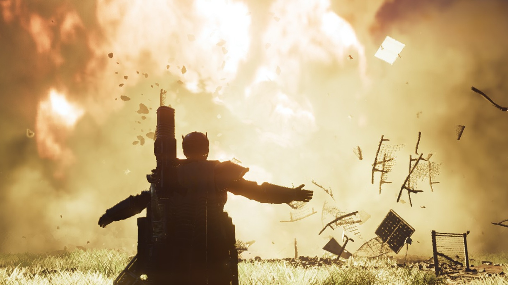
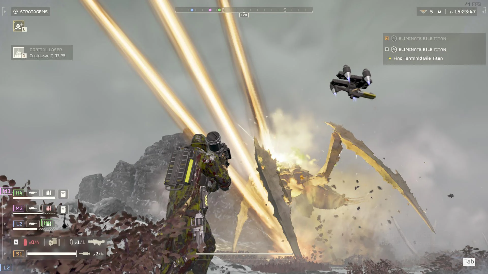
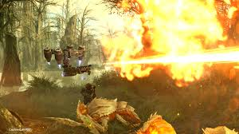

Estratagemas de uso general

Aguila 500KG
Bombardeo aguila de 500KG , una de las estratagemas más efectivas y versátiles.

Torretas Automáticas
Sistemas de defensa autónomos que protegen tu posición de ataques enemigos.

Láser Orbital
Un potente laser probeniente del destructor del helldiver con la suficiente potencia para destruir objetivos de alto valor.

AX/FLAM-75
Perro Guardian capas de expulsar fuego a sus enemigos aturdiendo y teniendo PEN pesada.